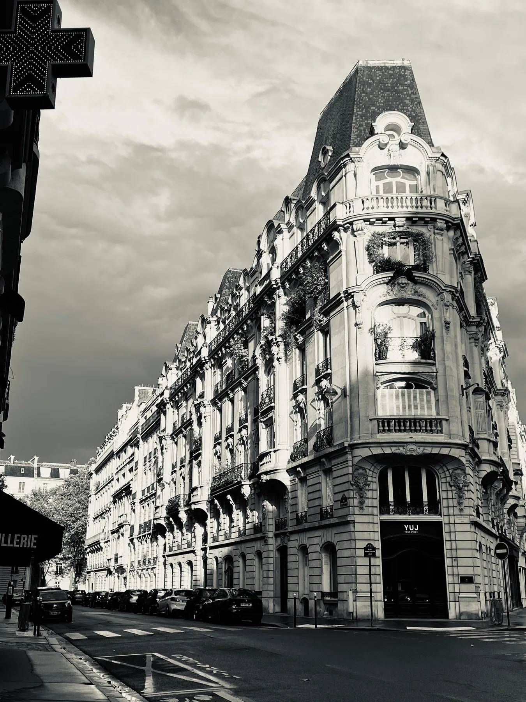

이곳의 여행 사진은 제가 길 위에서 직접 촬영한 작품들입니다. 파리의 거리와 피렌체의 건축, 나폴리의 광장에서 마주친 빛과 질감을 담았습니다. 익숙한 풍경에서도 잠시 멈춰 바라보게 되는 장면을 찾고, 그때의 시선을 사진으로 남깁니다. 일부 작품은 SwaylyStudio의 Etsy 숍에서 디지털 월아트로, Alamy에서는 이미지 라이선스로 만나보실 수 있습니다.
These are photographs I took on my travels, from the streets of Paris to the architecture of Florence and the open squares of Naples. I am drawn to light, texture, and the details that invite a slower look. Selected photographs are available as digital wall art through SwaylyStudio on Etsy, or for image licensing on Alamy.
